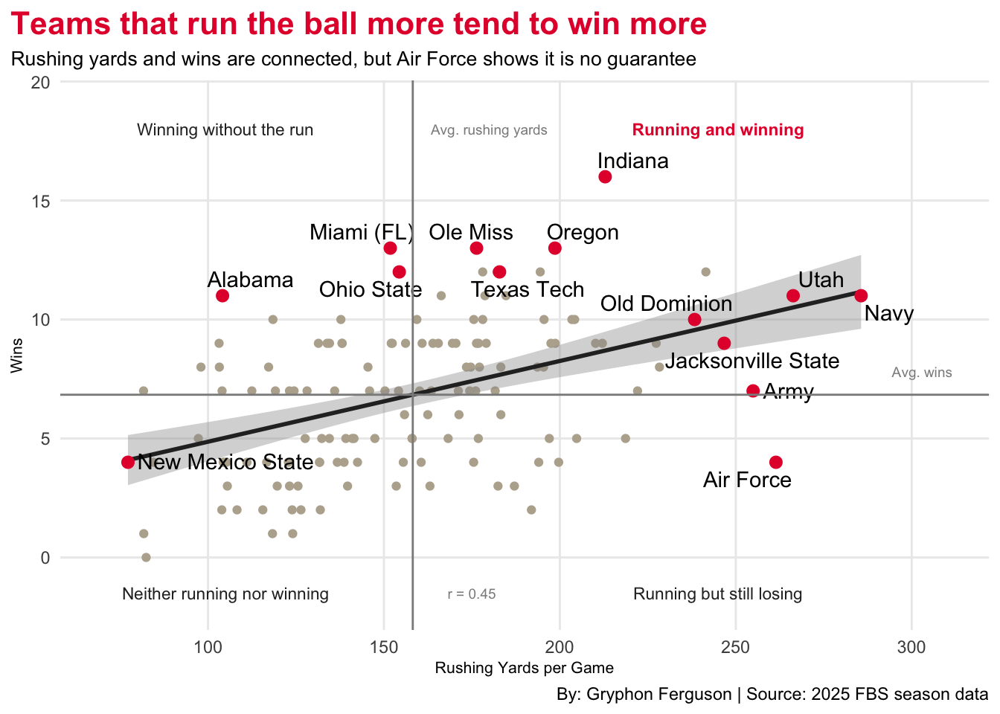

Code
library(tidyverse)
library(ggrepel)
library(gt)
fbs <- read_csv("dat/fbs_2025_rushing_wins.csv") |>
mutate(
record_group = case_when(
wins >= 10 ~ "Elite (10+ wins)",
wins < losses ~ "Losing (more losses than wins)",
wins >= losses ~ "Middle (.500 or better, under 10 wins)"
)
)
standouts <- filter(fbs, team %in% c("Navy", "Utah", "Air Force", "Army",
"Jacksonville State", "Indiana", "Miami (FL)",
"Oregon", "Ole Miss", "New Mexico State",
"Alabama", "Ohio State", "Old Dominion", "Texas Tech"))
ggplot() +
geom_point(data = fbs, aes(x = rush_ypg, y = wins), color = "#B8AE9C") +
geom_smooth(data = fbs, aes(x = rush_ypg, y = wins), method = "lm", color = "#2B2B2B") +
geom_point(data = standouts, aes(x = rush_ypg, y = wins), color = "#E41C38", size = 2.5) +
geom_text_repel(data = standouts, aes(x = rush_ypg, y = wins, label = team)) +
geom_hline(yintercept = mean(fbs$wins), color = "#8C8C8C") +
geom_vline(xintercept = mean(fbs$rush_ypg), color = "#8C8C8C") +
scale_x_continuous(limits = c(70, 310)) +
scale_y_continuous(limits = c(-2, 19)) +
geom_text(
aes(x = 303, y = 7.8),
label = "Avg. wins",
size = 2.5,
color = "#8C8C8C"
) +
geom_text(
aes(x = 180, y = 18),
label = "Avg. rushing yards",
size = 2.5,
color = "#8C8C8C"
) +
geom_text(
aes(x = 105, y = 18),
label = "Winning without the run",
size = 3,
color = "#2B2B2B"
) +
geom_text(
aes(x = 245, y = 18),
label = "Running and winning",
size = 3,
color = "#E41C38",
fontface = "bold"
) +
geom_text(
aes(x = 105, y = -1.5),
label = "Neither running nor winning",
size = 3,
color = "#2B2B2B"
) +
geom_text(
aes(x = 245, y = -1.5),
label = "Running but still losing",
size = 3,
color = "#2B2B2B"
) +
geom_text(
aes(x = 175, y = -1.5),
label = "r = 0.45",
size = 2.5,
color = "#8C8C8C"
) +
labs(
title = "Teams that run the ball more tend to win more",
subtitle = "Rushing yards and wins are connected, but Air Force shows it is no guarantee",
x = "Rushing Yards per Game", y = "Wins",
caption = "By: Gryphon Ferguson | Source: 2025 FBS season data"
) +
theme_minimal() +
theme(
plot.title.position = "plot",
plot.title = element_text(size = 16, face = "bold", color = "#E41C38"),
plot.subtitle = element_text(size = 10),
axis.title = element_text(size = 8),
panel.grid.minor = element_blank()
)